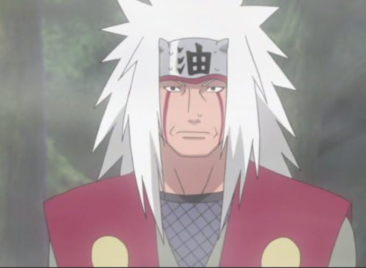

This was the first anime I started wathching,when I first entered anime universe I liked his strory line and loved how main character (Naruto Uzumaki)was determined to achieve his goal,this anime has pretty cool characters like sasuke uchiha(he was naruto's rival in whole series but at end bacame friends)
You can watch this series onnetflix
my favourite character in whole series was"JIRAYA" man who taught Naruto how to fight
and also gave some life lessons

story's pretty simple, who once was king of the pirates attained everything that world has offer even the secrets of the world and kept it on some island called "laughtale".On the day of his execution he sent a message to all the pirates in the world to go get his so called treasure called "one piece" "monkey D luffy "set a sail on the sea to recruit his crew members and get that one piece along with many powerfull rivaling pirates on the race to attain that one piece first
this sereies is available to watch onaniwatch,netflixetc.
my fav. character in whole series was probably "Roronoa zoro",I bet if you watch this anime you'd like him too


story's pretty unique 'soul reapers' who protect humans from other creautres like hollows but there are many other powerflull ones out there, go watch this series i know you'll love it
you can watch it onnetflix,etc.
The most ruthless among all and menacing charater,many people love this character his name is 'kenpachi zaraki'